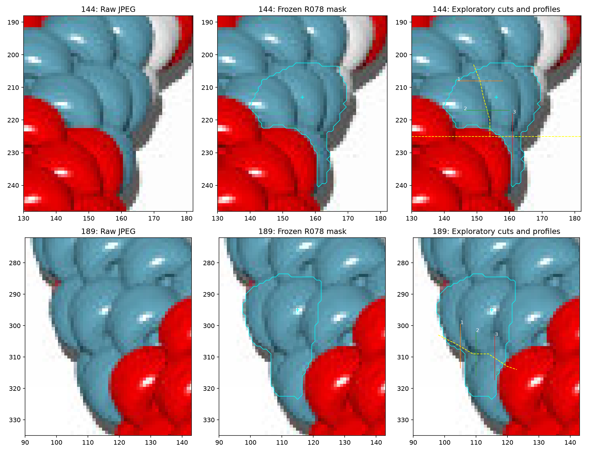
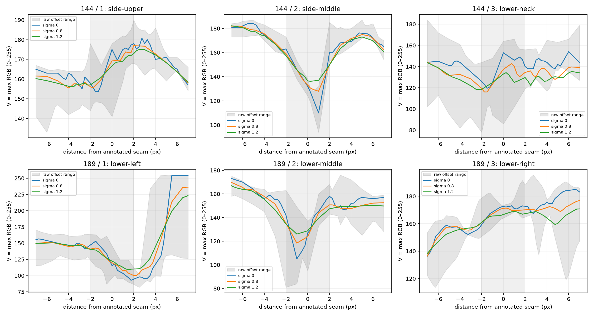
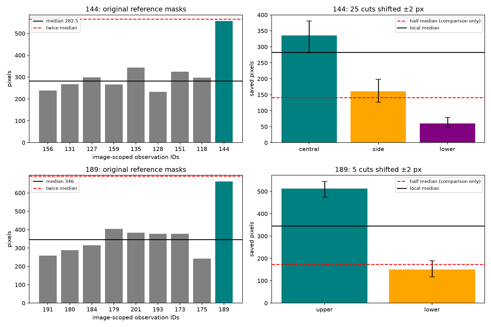

310 active observations remain unchanged. Cyan is the frozen mask; yellow cuts and numbered profiles are exploratory measurements. No portion receives a new identity.



Assessment and reproduction · Measurements · RGB samples · Hashes and parameters
No new maker questions; saved sliver guidance remains applied. Older photo questions remain pending.